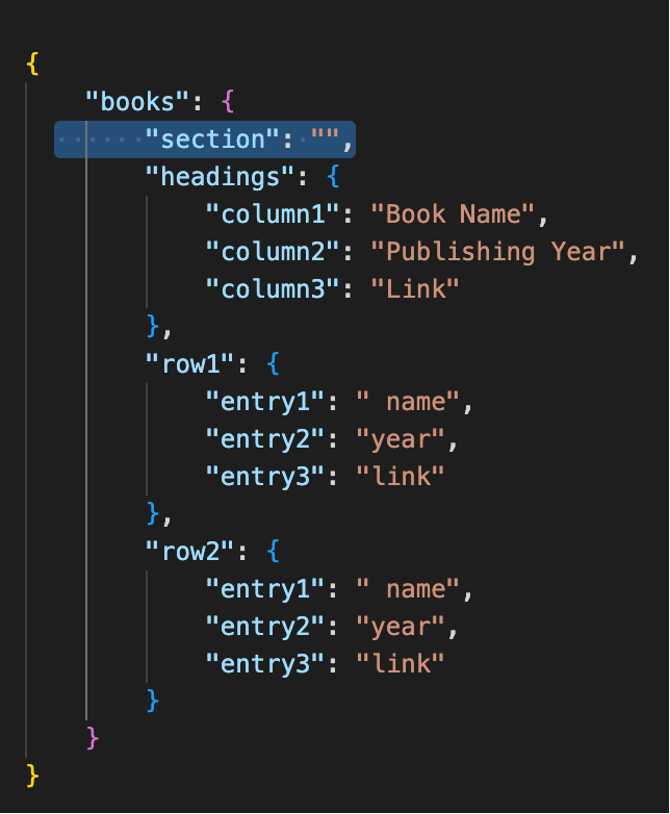
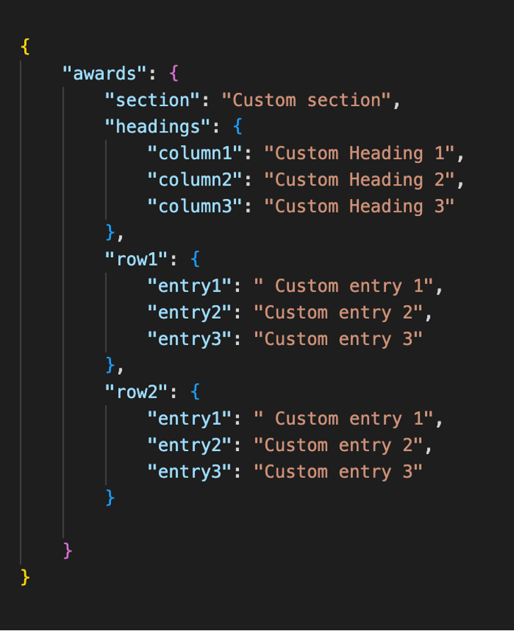

How to Add Your Data for Hosting on the Website
- Reply to this thread or personally message me with your github username so that it can be added on github repo
- Do not delete any key inside jsons. You may leave key's value as empty string. And for JSONs with section key, just leaving that empty will not display the information in it.
Detailed steps
- Fork the repository https://github.com/kerzendorf-group/group-data
- Clone your fork to your local system through the terminal
- Run
cd group-data - Create a new branch Eg:
git branch my-data
You may use any branch name instead of my-data - Switch to new branch
git checkout my-data - Your forked repository, group-data, contains a directory named members. Navigate there and find your own directory or create one if it does not already exist.
- Inside your own directory's json folder, copy all the files from members/template_person/
- The following figure shows the structure of what the directories should look like. Please note that the 'jsons' folder contains multiple JSON files and be sure to have them all.
- Next, fill out the JSONs:.
- Ensure that the profile picture you upload is square
- The "category" key inside basic_info.json should be one of the following:
"Investigator", “Undergraduate Students”, “Graduate Students”, "Postdoctoral Researchers", "Researchers", "Research Software Engineers" (spelling and case-sensitive). - Please note "primary_role": "Your_role" is for your more personal role in group.
Example:
"category": "Undergraduates",
"primary_role": "Professorial Assistant" - Also in basic_info.json, if you are currently a part of the Kerzendorf group, keep "group_end_year": "Present". Otherwise, enter the year of leaving so that your name can be placed in the Alumni category
- In social_links.json, if you do not have any of the social media accounts, you may leave them as an empty string. See the figure below for reference
- In the following JSON files - awards.json, books.json, docs.json, education.json, experience.json, outreach.json, projects.json - you may customize them as per your needs. For example, if you have not written any books, then the value of the 'section' key should be left blank (empty string), as shown below. Otherwise, the part below section key of json doesn't need to be changed. 
- You may also customize fields as per your wishes, as shown below. 
- Ensure that after uploading the any media files, such as a profile picture or PDFs, you update those changes in your own JSON files in your directory as well, with the correct path pointing to the file location.
- Add and commit your changes with git
Example:git add .
Check status of changed filesgit status
Commit those changesgit commit -m "a message like my_name's changes" - Push to upstream/main and create a Pull Request.
Example:git push -u origin my-data - Finally, to create a Pull Request: either click on Compare & pull request or go to Pull requests tab on right of code and click on New pull request
- Select kerzendorf-group/group-data in base repository
- Select incoming changes in base
- Select your cloned repository in head
- Select newly created branch (Eg: my-data) inside compare
- Click on Create pull request button


See below image for reference.